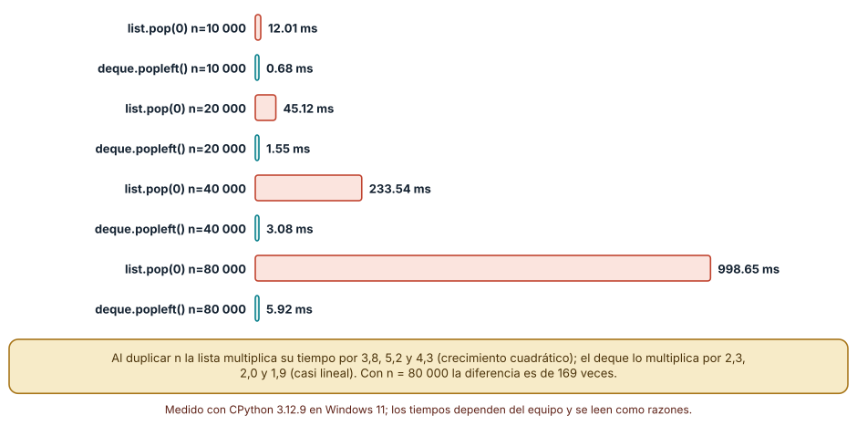
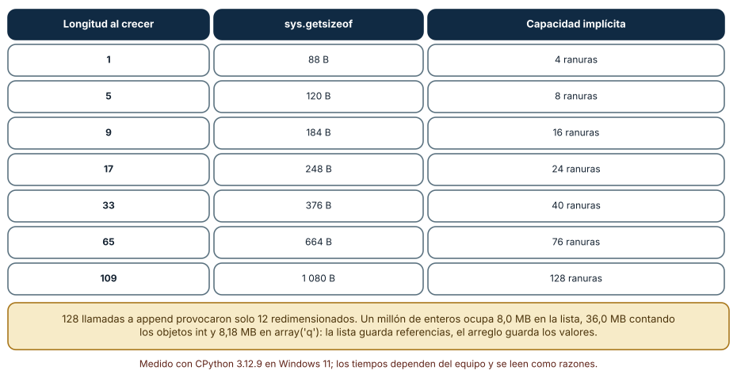
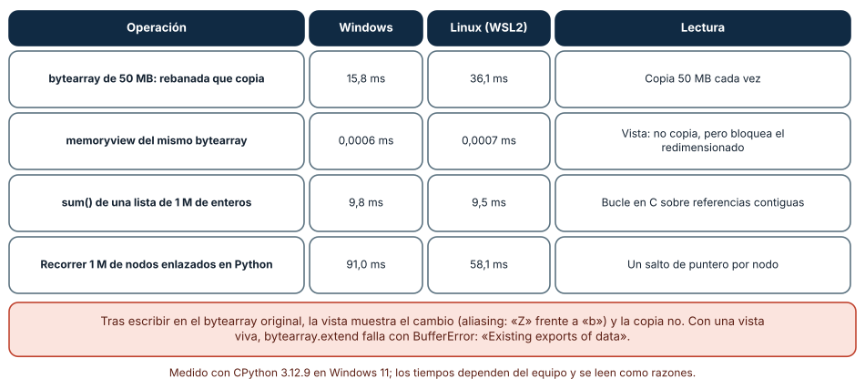

← SE-084 — Proyecto: comparación semántica con pruebas comunes · ↑ Parte 07 · 📚 Índice completo · 🌐 Portal · SE-086 — Pilas, colas, deques y prioridades →
Punto profesional y fundamento pedagógico
Punto profesional. La clase existe para elegir secuencias por acceso, inserción, localidad y representación.
Por qué aparece aquí. Se sitúa después de Proyecto: comparación semántica con pruebas comunes y antes de Pilas, colas, deques y prioridades: convierte el conocimiento anterior en una decisión observable que la clase siguiente podrá reutilizar. La continuidad se comprueba en el artefacto, no por compartir vocabulario.
Error conceptual que debe corregir. Tratar lista y arreglo como nombres intercambiables.
Secuencia de aprendizaje. Antes de leer la solución, el estudiante predice el resultado del caso normal y del error conceptual anterior. Luego explica un caso resuelto paso a paso, construye un contraejemplo que cambie la decisión y, sin consultar el texto, reconstruye el mecanismo y lo aplica a una entrada nueva. La secuencia usa predicción, explicación propia, contraste y recuperación. ICAP distingue participación de construcción de conocimiento; How People Learn II exige conectar conocimiento previo, contexto y transferencia; la práctica de recuperación respalda producir de nuevo la explicación tras una demora; y Education for Life and Work exige devolución que explique la causa del error.
Evidencia de aprendizaje. Sequence-bench.md con operaciones, tamaños, modelo de costo y medición. Debe contener predicción previa, observación, explicación causal, contraejemplo, criterio de aceptación y una nota de qué dato haría cambiar la conclusión.
Límite de la conclusión. Los costos concretos dependen de runtime y carga.
Trazabilidad fuente → afirmación
| Fuente primaria u oficial | Afirmación que respalda | Lo que no prueba |
|---|---|---|
| MIT 6.006 Introduction to Algorithms | Estructuras, algoritmos, corrección y análisis de complejidad; autoridad: MIT OpenCourseWare | No demuestra por sí sola que el artefacto del estudiante sea correcto. |
| Python Data Model | Semántica de secuencias, conjuntos, mappings, igualdad y hash; autoridad: Python Software Foundation | No demuestra por sí sola que el artefacto del estudiante sea correcto. |
| Python Debugging and Profiling | Timeit, cprofile y tracemalloc con sus límites; autoridad: Python Software Foundation | No demuestra por sí sola que el artefacto del estudiante sea correcto. |
Antes de empezar
Esta clase continúa la biblioteca de estructuras y algoritmos de la Parte 07. Recupera la evidencia de la clase anterior, añade una decisión propia de Arreglos, listas y secuencias y deja un artefacto que la clase siguiente deberá consumir. La pregunta activa es: ¿Qué cambia al elegir almacenamiento contiguo, secuencia dinámica o nodos enlazados?
Prerrequisitos
- Haber completado la clase anterior o reconstruir su contrato y evidencia.
- Python 3.11 o posterior, terminal, editor y Git; un segundo runtime es opcional y debe declararse.
- Trabajar con fixtures sintéticos: ninguna observación necesita datos de una persona o sistema real.
Problema auténtico
La biblioteca de estructuras y algoritmos conserva casos en orden de llegada, consulta por posición y elimina vencidos. Una lista funciona con cien elementos, pero insertar al frente y copiar segmentos domina cuando la carga crece.
Objetivos observables
Al terminar podrás explicar los cinco mecanismos de esta clase, predecir su comportamiento antes de ejecutar, construir un caso normal y uno límite, diagnosticar el fallo controlado, comparar una alternativa y entregar evidencia que otra persona pueda reproducir.
Mapa conceptual
Ver la notación fuente del diagrama
flowchart LR
N1[Interfaz de secuencia] --> N2[Arreglo contiguo / localidad] --> N3[Lista dinámica / capacidad] --> N4[Estructuras enlazadas] --> N5[Slicing, vistas / copias]
N5 -->|fallo o cambio| N1El mapa se lee como una cadena de razonamiento, no como fases obligatorias del runtime. La flecha de retorno indica que un fallo o cambio de requisito obliga a revisar el modelo inicial; no autoriza a parchear solo la última salida.
Temas y por qué importan
| Tema | Por qué cambia una decisión profesional | Evidencia mínima |
|---|---|---|
| Interfaz de secuencia | Una secuencia ofrece orden, longitud, acceso e iteración; la interfaz no fija representación. | Predicción, traza causal y contraejemplo de Interfaz de secuencia en sequence-bench.md |
| Arreglo contiguo y localidad | Un arreglo coloca elementos o referencias en posiciones contiguas, permite índice constante bajo el modelo RAM y aprovecha caché. | Predicción, traza causal y contraejemplo de Arreglo contiguo y localidad en sequence-bench.md |
| Lista dinámica y capacidad | Una lista dinámica mantiene tamaño lógico y capacidad reservada. | Predicción, traza causal y contraejemplo de Lista dinámica y capacidad en sequence-bench.md |
| Estructuras enlazadas | Los nodos enlazados insertan localmente cuando ya se posee el nodo, pero localizar una posición sigue siendo lineal. | Predicción, traza causal y contraejemplo de Estructuras enlazadas en sequence-bench.md |
| Slicing, vistas y copias | Una rebanada puede copiar o crear una vista según tipo y biblioteca. | Predicción, traza causal y contraejemplo de Slicing, vistas y copias en sequence-bench.md |
Conceptos y decisiones
1. Interfaz de secuencia
Una secuencia ofrece orden, longitud, acceso e iteración; la interfaz no fija representación. Antes de elegir se enumeran operaciones y frecuencia. Acceso aleatorio, inserción interior y recorrido no pueden optimizarse todos con la misma organización.
2. Arreglo contiguo y localidad
Un arreglo coloca elementos o referencias en posiciones contiguas, permite índice constante bajo el modelo RAM y aprovecha caché. Crecer puede requerir reservar y copiar; O(1) amortizado describe una secuencia de operaciones, no cada append.
3. Lista dinámica y capacidad
Una lista dinámica mantiene tamaño lógico y capacidad reservada. Cuando se agota, asigna un bloque mayor y mueve referencias. Ese mecanismo explica picos y memoria ociosa; medir solo la operación media puede ocultar una pausa relevante.
4. Estructuras enlazadas
Los nodos enlazados insertan localmente cuando ya se posee el nodo, pero localizar una posición sigue siendo lineal. Punteros, asignaciones y mala localidad pueden superar la ventaja teórica. En Python, la lista incorporada no es una linked list.
5. Slicing, vistas y copias
Una rebanada puede copiar o crear una vista según tipo y biblioteca. La complejidad y el aliasing cambian con esa decisión. La biblioteca de estructuras y algoritmos evita retener una gran colección por una vista pequeña y documenta cuándo una salida es snapshot o referencia viva.
Una cola hecha con pop(0): medir antes de culpar
El fallo clásico de la biblioteca es vaciar una cola de casos con lista.pop(0). Cada extracción mueve todas las referencias restantes una posición hacia la izquierda, de modo que vaciar n elementos hace del orden de n²/2 movimientos. Lo medimos con n = 10 000, 20 000, 40 000 y 80 000 (mínimo de tres ejecuciones): la lista tardó 12,0, 45,1, 233,5 y 998,7 ms; collections.deque con popleft() tardó 0,68, 1,55, 3,08 y 5,92 ms. Al duplicar n, la lista multiplicó su tiempo por 3,8, 5,2 y 4,3 (crecimiento cuadrático) y el deque por 2,3, 2,0 y 1,9 (casi lineal). Con 80 000 elementos la diferencia es de 169 veces. Un bucle de insert(0, x) mostró lo mismo: 28, 115 y 459 ms para 10 000, 20 000 y 40 000 inserciones.
El deque no es gratis en todo: guarda bloques enlazados y el acceso por índice al medio es lineal, por lo que pierde donde la lista gana. La conclusión no es «usa deque», sino «la operación dominante es sacar del frente, y la lista no está hecha para eso».

Cómo leer la figura. Cada par de barras corresponde a un tamaño. Lo que importa es cómo crece la barra coral al duplicar n, no su valor absoluto. Dónde deja de valer: los valores son de un equipo y un intérprete; en Linux (CPython 3.12.3) la proporción se mantuvo (875,7 ms frente a 10,6 ms con 80 000). Si la cola nunca supera unos cientos de elementos, pop(0) es aceptable (véase SE-095).
Capacidad reservada: por qué append es barato en promedio
Una lista de Python guarda un arreglo de referencias con más espacio del que usa. Observamos el mecanismo sin tocar el intérprete: añadimos 128 elementos de uno en uno y registramos sys.getsizeof cada vez que cambia. El tamaño cambió solo 12 veces: con 1, 5, 9, 17, 25, 33, 41, 53, 65, 77, 93 y 109 elementos, pasando de 88 a 1 080 bytes. Restando los 56 bytes de la cabecera y dividiendo por 8 se obtiene la capacidad implícita: 4, 8, 16, 24, 32, 40, 52, 64, 76, 92, 108 y 128 ranuras. El crecimiento no es una duplicación exacta (CPython reserva aproximadamente un octavo adicional), pero el efecto es el mismo: cada redimensionado copia las referencias existentes, y el costo se reparte entre muchos append.
Esto explica por qué «O(1) amortizado» no equivale a «cada llamada cuesta lo mismo»: la llamada que dispara el redimensionado es más cara. También explica la memoria: un millón de enteros ocupó 8,0 MB como lista de referencias, 36,0 MB si se cuentan los objetos int a los que apuntan y 8,18 MB como array('q'), que guarda los valores en bruto. Un arreglo tipado ahorra memoria y mejora la localidad; a cambio, solo admite un tipo de valor.

Cómo leer la figura. Las filas muestran solo algunos de los doce redimensionados; la capacidad crece por escalones, no uno a uno. Dónde deja de valer: las cifras corresponden a CPython 3.12 de 64 bits. Otra versión u otro intérprete (PyPy, por ejemplo) usa otra política de crecimiento, y una lista de otro lenguaje puede crecer por factor 2. Se enseña el mecanismo, no las constantes.
Vistas y copias: el mismo corte, dos semánticas
bytearray[1:] crea una copia; memoryview(bytearray)[1:] crea una vista sin copiar. Con un buffer de 50 MB, la rebanada que copia tardó 15,8 ms (36,1 ms en Linux) y la vista menos de un microsegundo. La vista, sin embargo, no es un valor sino una referencia viva: tras escribir big[10] = 7, la vista mostró 7, mientras que una copia hecha antes de escribir conservó el valor anterior. En un experimento pequeño, b = bytearray(b'abcdef'); copia = b[1:3]; vista = memoryview(b)[1:3]; b[1] = ord('Z') dejó la copia en bc y la vista en Zc. Además, mientras exista una vista, b.extend(b'x') falla con BufferError: Existing exports of data: object cannot be re-sized.
Los recorridos completan el cuadro. Sumar un millón de enteros con sum(lista) tardó 9,8 ms; recorrer un millón de nodos enlazados con un bucle de Python tardó 91,0 ms (58,1 ms en Linux). La estructura enlazada insertaría en O(1) si ya tuviéramos el nodo, pero localizar una posición sigue siendo lineal y cada salto de puntero es un acceso a memoria que la caché no puede anticipar. Otro error común de aliasing: [[0]] * 3 crea tres referencias a la misma lista interna; al añadir un elemento a la primera, las tres midieron 2.

Cómo leer la figura. Compara las columnas Windows y Linux solo como razón entre filas; los milisegundos absolutos cambian de máquina a máquina. Dónde deja de valer: una vista evita la copia pero ata la vida del buffer original; si el contrato exige una instantánea (snapshot) estable, la copia es obligatoria. El recorrido enlazado se midió con nodos de Python con __slots__; en C o Rust, con asignación contigua, la diferencia con un arreglo sería otra.
Definiciones de trabajo
- interfaz de secuencia: una secuencia ofrece orden, longitud, acceso e iteración; la interfaz no fija representación.
- arreglo contiguo y localidad: un arreglo coloca elementos o referencias en posiciones contiguas, permite índice constante bajo el modelo ram y aprovecha caché.
- lista dinámica y capacidad: una lista dinámica mantiene tamaño lógico y capacidad reservada.
- estructuras enlazadas: los nodos enlazados insertan localmente cuando ya se posee el nodo, pero localizar una posición sigue siendo lineal.
- slicing, vistas y copias: una rebanada puede copiar o crear una vista según tipo y biblioteca.
Las definiciones son operativas para la biblioteca de estructuras y algoritmos. No convierten términos con historia más amplia en sinónimos y deben contrastarse con la documentación primaria enlazada al final.
Ejemplo mínimo
cases = ["c1", "c2", "c3"]
assert cases[1] == "c2"
cases.append("c4")
expired = cases.pop(0) # correcto, pero desplaza el resto
assert expired == "c1"Antes de ejecutar, predice estado, resultado y error. Después registra versión, comando y salida. Si el fragmento es pseudocódigo o pertenece a otro lenguaje, etiquétalo como tal y no afirmes que fue ejecutado.
Ejemplo profesional
En la biblioteca de estructuras y algoritmos, un caso conserva identidad, prioridad, dependencias, instante de llegada y estado de resolución. La implementación de esta clase debe conservar ese contrato aunque cambie la forma interna. El caso profesional no pregunta únicamente si produce una salida: pregunta quién puede producirla, qué estado observa, cómo falla y qué rastro permite disputar una decisión incorrecta.
Compara el caso normal con autorización falsa, evidencia incompleta, empate y repetición. Un mecanismo es apropiado cuando esas diferencias quedan visibles y localizadas; es peligroso cuando dependen de orden accidental, estado oculto o una convención que el consumidor no puede conocer.
Práctica guiada
- Copia el contrato de entrada y salida antes de escribir implementación.
- Predice el caso normal y un límite; identifica la invariante que no puede romperse.
- Implementa la versión mínima sin I/O dentro del núcleo.
- Ejecuta el caso y conserva comando, versión y salida bajo
evidence/. - Introduce el fallo controlado, reduce la reproducción y formula dos hipótesis rivales.
- Corrige la causa, añade regresión y ejecuta el conjunto completo.
- Compara con otro paradigma o lenguaje indicando qué semántica se preserva.
Ejercicios
- Medición de una cola: reproduce el vaciado con
pop(0)y conpopleft()para cuatro tamaños. Calcula la razón entre tiempos consecutivos y decide si el crecimiento es lineal o cuadrático. - Capacidad: añade 200 elementos a una lista y registra
sys.getsizeofcuando cambie. Ajusta una regla para predecir el siguiente salto y comprueba si acierta. - Aliasing: construye una cuadrícula 3×3 de dos maneras (
[[0]*3]*3y por comprensión), escribe una celda y explica por qué una de las dos maneras corrompe filas. - Decisión: para una carga con 90 % de lecturas por índice y 10 % de inserciones al frente, elige estructura y escribe qué medición cambiaría tu elección.
Reto verificable
Entrega implementación, fixtures, pruebas y un informe corto. Se aprueba si otra persona ejecuta desde checkout limpio, obtiene los mismos resultados y puede relacionar cada rama o transformación con una regla del dominio. No se aprueba por cantidad de archivos ni por usar la sintaxis característica del paradigma.
Caso conductor
La biblioteca de estructuras y algoritmos recibe casos del motor de reglas comparado, mantiene una frontera de trabajo priorizada y explica por qué el siguiente caso es elegible. Ejecuta una carga pequeña trazable, duplicados, prioridades iguales y una dependencia ausente. Cambia después una sola regla o condición y revisa qué archivos, pruebas y trazas debieron modificarse. Esa superficie de cambio alimenta el proyecto final de la parte.
Preguntas frecuentes
¿Una lista de Python es una lista enlazada?
No. Es un arreglo dinámico de referencias: el acceso por índice es constante y insertar al frente es lineal. Las pruebas de pop(0) (12 ms frente a 0,68 ms con 10 000 elementos) lo muestran sin leer el código del intérprete.
¿Cuándo conviene array('q') en vez de una lista?
Cuando hay muchos números del mismo tipo y la memoria o la localidad importan: un millón de enteros ocupó 8,18 MB frente a 36 MB con sus objetos. No conviene si los valores son heterogéneos o si el código necesita objetos Python ricos.
¿Por qué append se llama «O(1) amortizado»?
Porque 128 llamadas provocaron solo 12 redimensionados: el costo de copiar se reparte. Se mide el promedio de una secuencia, no cada llamada; si una latencia máxima importa, se reserva capacidad o se usa otra estructura.
¿Una rebanada de lista es una vista?
No: lista[a:b] copia las referencias. Con bytearray también copia; solo memoryview crea una vista. Saber cuál se tiene decide si un cambio posterior en el original se ve o no.
Fallo controlado y diagnóstico
Implementa una cola con pop(0) y mide lotes crecientes. Relaciona el crecimiento con desplazamiento lineal; no concluyas todavía que deque gana para toda operación.
Registra síntoma, entrada mínima, hipótesis, observación que descarta cada hipótesis, causa, corrección y prueba de regresión. No cambies simultáneamente implementación, fixture y expectativa.
Mide una cola con pop(0) en lotes de 10 000, 20 000, 40 000 y 80 000 elementos y registra el tiempo de cada uno. Síntoma: al duplicar el tamaño el tiempo se multiplica por más de 3 y se acerca a 5. Hipótesis rivales: (a) el recolector de basura o la memoria dominan; (b) el desplazamiento de referencias es lineal por extracción. Prueba: repite con popleft() y observa que el crecimiento baja a ~2; repite con una cola corta (balanceada, 78 elementos al final) y observa que pop(0) apenas pierde (4,4 ms frente a 3,8 ms). Conclusión: la causa es el desplazamiento, y su importancia depende de la longitud de la cola, no del hecho de usar pop(0). No cambies a la vez la estructura y el tamaño de la prueba.
Errores comunes y cómo corregirlos
| Síntoma | Causa probable | Corrección |
|---|---|---|
| Vaciar una cola de 80 000 elementos tarda casi un segundo | Se usa lista.pop(0) como operación dominante | Cambiar a deque.popleft() y repetir la medición con la misma carga |
| Tres filas de una cuadrícula cambian a la vez | [[0]] * 3 repite la misma lista interna | Construir con [[0] for _ in range(3)] y probar una escritura aislada |
| Un campo de un registro aparece modificado en otro módulo | Se devolvió una vista (o la lista original) creyendo que era una copia | Documentar si la salida es instantánea o referencia viva y copiar en la frontera |
bytearray.extend lanza BufferError | Hay un memoryview vivo sobre el buffer | Liberar la vista (with memoryview(b) as v:) antes de redimensionar |
| «Funciona con 100 elementos» pero no con 100 000 | Se midió un solo tamaño | Medir al menos cuatro tamaños y comparar cómo crece el tiempo al duplicar n |
Entorno y archivos clave
work/SE-085/
├── README.md
├── algorithm_library/
│ ├── domain.py
│ └── se_085.py
├── fixtures/cases.json
├── tests/test_se_085.py
└── evidence/diagnosis.mdEl README declara plataforma, runtimes, comandos, limpieza y límites. Evita dependencias externas cuando la biblioteca estándar permita observar el mecanismo; si agregas una, fija procedencia y versión.
Seguridad, ética y accesibilidad
- la autorización forma parte del dominio y no se infiere por ausencia de rechazo;
- no uses
eval, reglas descargadas ni serialización insegura; - limita colas, recursión, tamaño de entrada y tiempo de evaluación;
- redacta trazas y conserva una explicación textual además de color o animación;
- una recomendación automatizada debe poder revisarse, impugnarse y corregirse;
- respeta licencias de ejemplos y atribuye adaptaciones.
Puente hacia el trabajo con agentes
Un agente que escribe código y ve que la prueba pasa con 100 elementos no sabe que pop(0) es cuadrático: necesita un criterio de aceptación con tamaños y un presupuesto de tiempo que el harness ejecute. Pídele que declare la operación dominante, que mida al menos cuatro tamaños y que adjunte las razones entre tiempos, no un solo número. Revisa especialmente si devuelve copias o vistas en las fronteras: es el tipo de error que una prueba con datos pequeños no detecta y que un agente reproduce sin darse cuenta.
Transferencia
Traslada un fixture al segundo modelo o lenguaje. Compara representación de ausencia, error, mutabilidad, orden y cancelación. La transferencia está lograda cuando el contrato se conserva y las diferencias están explicadas, no cuando la sintaxis se parece.
Evaluación y evidencia
| Criterio | Evidencia para aprobar |
|---|---|
| comprensión | explicación causal de los cinco mecanismos |
| corrección | normal, límite, inválido y contraejemplo |
| diseño | estado, efectos y contrato localizables |
| diagnóstico | reproducción mínima y regresión |
| transferencia | comparación semántica, no estética |
| reproducibilidad | versiones, comandos, salida y límites |
Fuentes
- MIT 6.006 Introduction to Algorithms — Estructuras, algoritmos, corrección y análisis de complejidad; autoridad: MIT OpenCourseWare.
- Python Data Model — Semántica de secuencias, conjuntos, mappings, igualdad y hash; autoridad: Python Software Foundation.
- Python Standard Library — Deque, heapq, bisect, graphlib y contenedores disponibles; autoridad: Python Software Foundation.
- Python Debugging and Profiling — Timeit, cprofile y tracemalloc con sus límites; autoridad: Python Software Foundation.
- Mathematics for Computer Science — Inducción, grafos, conteo y razonamiento discreto; autoridad: MIT OpenCourseWare.
- SWEBOK Guide v4.0a — Construcción, medición y fundamentos de ingeniería; autoridad: IEEE Computer Society.
Cada fuente respalda el mecanismo indicado; ninguna demuestra que la implementación de la biblioteca de estructuras y algoritmos sea correcta. Esa afirmación depende de fixtures, pruebas, trazas y revisión reproducible.
- Python:
collections.deque— contrato deappend,popleftymaxlen; indica que el acceso al medio esO(n). - Python:
array— arreglos tipados con códigos de tipo y tamaño de elemento. - Python: tipos integrados,
memoryview— semántica de vistas sin copia sobre buffers. - Python Wiki: TimeComplexity — costos documentados de las operaciones de
listydeque; son costos promedio de CPython.
Límites y siguiente paso
La secuencia preserva orden pero no expresa por sí sola disciplina LIFO, FIFO o prioridad. La siguiente clase diseña esas políticas explícitamente.
Glosario
- interfaz de secuencia: una secuencia ofrece orden, longitud, acceso e iteración; la interfaz no fija representación.
- arreglo contiguo y localidad: un arreglo coloca elementos o referencias en posiciones contiguas, permite índice constante bajo el modelo ram y aprovecha caché.
- lista dinámica y capacidad: una lista dinámica mantiene tamaño lógico y capacidad reservada.
- estructuras enlazadas: los nodos enlazados insertan localmente cuando ya se posee el nodo, pero localizar una posición sigue siendo lineal.
- slicing, vistas y copias: una rebanada puede copiar o crear una vista según tipo y biblioteca.
← SE-084 — Proyecto: comparación semántica con pruebas comunes · ↑ Parte 07 · 📚 Índice completo · 🌐 Portal · SE-086 — Pilas, colas, deques y prioridades →